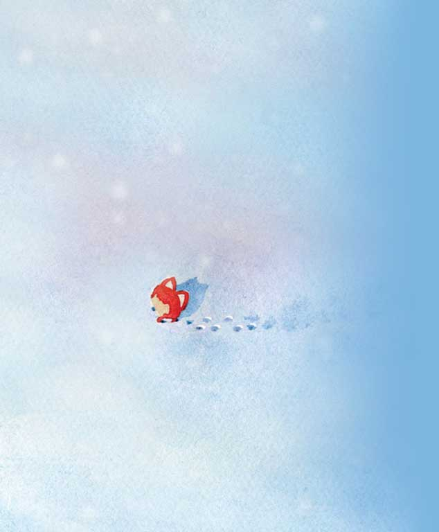

浪浪 ❤ 漫漫 一生一世
按键盘 "↓" 开始倾听浪浪的表白
过去的浪浪一直是一个人生活，享受着孤独，也憧憬着爱情。

一个人的长廊

一个人的山岗

一个人的地铁

一个人的游乐场

但他依然乐观，微笑着，等待着

生活难免有风风雨雨

他总是能够轻松的应对

并且面带阳光、自信的笑容

生活也不会总是一帆风顺

但他每次都能勇敢的面对
随时准备接受生活的挑战


可是浪浪的爱情又在哪里呢？
在镜子里面吗？他不敢相信

他去问大树，我的爱情在哪里？
大树告诉他，也许就在不远的地方

于是，浪浪一个人继续向前走
走在茫茫的雪地上

直到有一天浪浪与漫漫相遇了

浪浪喜欢漫漫，因为漫漫的出现，浪浪脸上有了更加灿烂的笑容

平時浪浪會陪漫漫 讓她開心 讓她快樂


然後兩個人一起聊開心的、煩惱的、傷心的、不知所措的、幸福的、溫暖的

浪浪很愿意分担漫漫的不开心， 分享给漫漫快乐
每天浪浪都會去找漫漫 就是想知道她每天過得怎麼樣

陪她開心 陪她難過

两个人心对心的交流，感觉时间过得很快

直到很晚
浪浪才會帶著她溫暖的笑容

然後高興地進入夢鄉 希望能夢到漫漫

浪浪很快就成为了漫漫的逛街助手

浪浪和漫漫天天都膩在一起 去了好多地方玩

浪浪也和漫漫一樣成為了一個吃貨

學習、工作

後來浪浪回去了 但仍然為了對方努力著

煮飯

想像並努力實現著：每天早上，漫漫能吃著浪浪做的美食 開心的在一起

然後在同一個站台 高高興興的一起去上班
浪浪感觉自己好幸福。
因为自己有了家
那个有漫漫在的地方

他们偶尔也会吵架

浪浪不想这样


一定是我有什么做的不对，浪浪在想
如果没有漫漫在身边，窗外就没有风景

如果没有漫漫在身后


浪浪又怎会飞的更高更远
浪浪不想这样。他要为漫漫改变自己
漫漫说她喜欢成熟的人，于是浪浪许下愿望


我愿为你变成熟
爱情就像花草一样
需要用包容来浇灌

再到后来，漫漫要过生日了
浪浪开始为漫漫准备礼物


看着礼物一件件准备好了 浪浪好开心 因为他想象着漫漫收到礼物时 开心的样子

想想后面还有一辈子 浪浪好开心 因为可以和漫漫 去全世界好多地方玩
浪浪也会继续努力
为了他和漫漫的梦之城堡

浪浪很幸福，因为他找到了漫漫。
他相信后面的每天都会是快乐的。

后来的一天，漫漫说她不敢坐山车了，于是浪浪就带她到别的地方玩。这只是他们幸福生活中的一件小事，小到无法引起别人的注意。可这是属于浪浪和漫漫的幸福生活。


漫漫：永远有多远？
浪浪：比时间多一秒就是永远，我会永远爱你
漫漫：世界有多大？
浪浪：你走到哪里，世界就有多大
愿得一人心，白首不相离


情人节快乐
I love you

浪浪和漫漫的故事会一直继续下去。
无论精彩、平淡都会是他们喜欢的。
-- 按“Esc" 键有惊喜